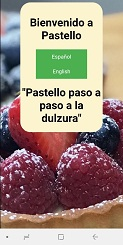
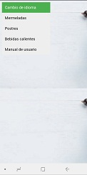
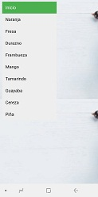
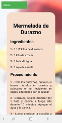
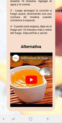

User Manual
Welcome: it is the main page where you will choose which language you would like to follow the page.

After choosing the language (e.g. "English") you will enter the main menu of the site that contains 4 proposals...

The first of them is "Jams" which contains a list of 9 homemade recipes to make, you will be able to choose the one of your preference.

DESIGN
Each recipe has "Ingredients and Procedure".

Also at the end of the recipe has an alternative video to see, if the user did not understand the recipe found above

If the user wants to return to the menu when seeing other options it is only necessary to click on the upper left button "Menu".
Once you have accessed the site How can you change the language
At the top of the menu is the option "Change language" click and you will be given the option to switch to the second language ("English").